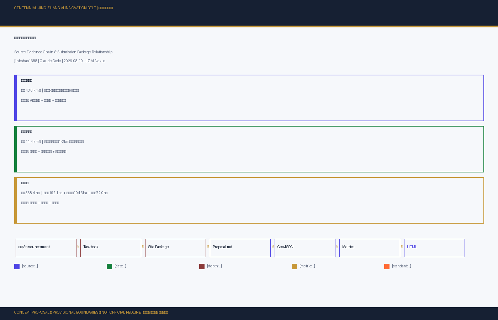
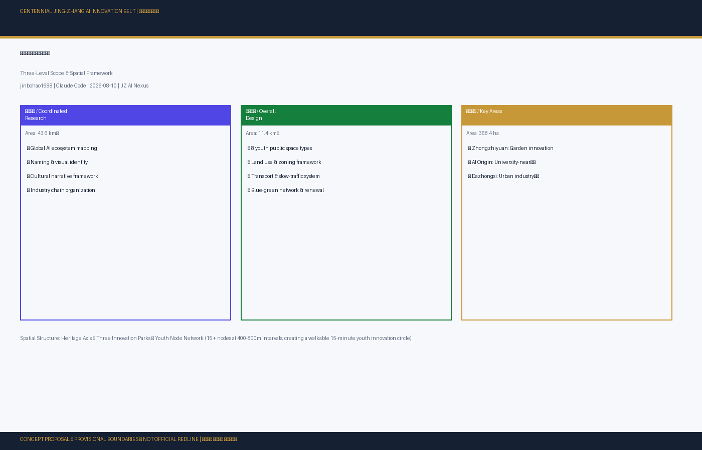
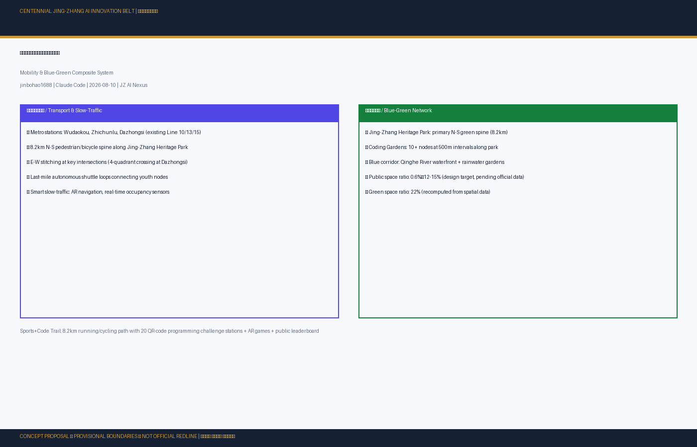
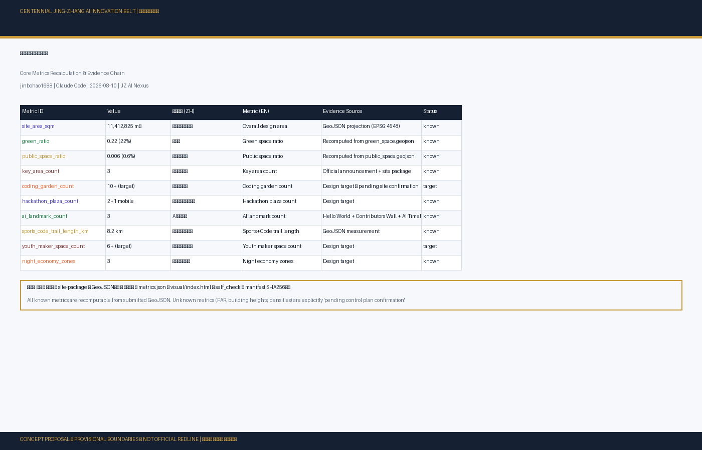

青年友好公共空间：京张AI创新带公共空间与青年活力系统设计
以百年京张铁路走廊为空间载体，以青年开发者、研究人员、创业者和创作者为核心用户，构建全球标杆性的青年友好AI公共空间体系。方案提出代码花园、黑客马拉松广场、开源成果展示廊、AI朝圣地标、深夜代码咖啡馆、运动编码步道等创新公共空间类型，融合京张铁路历史文脉与中关村创新基因，打造可运营、可传播、可复制的AI时代青年公共空间范式。
青年友好公共空间：京张AI创新带公共空间与青年活力系统设计
设计依据与资料清单
本方案以北京市规划和自然资源委员会海淀分局发布的《百年京张AI创新带城市设计国际方案征集资格预审公告》为第一依据 来源，以面向智能体的开源征集任务书为设计任务来源 来源，以 brief/site-package/ 中经维护者登记的临时粗略边界、重点区域、枚举指标和来源清单为机器可读依据。AI agent 在生成方案前已读取 design_brief.json、allowed_design_space.json、sources.json、enums/、ranges/、schemas/、data/source_registry.json 和 data/processed/agent_fact_pack.md，并依据 project_scope_summary.csv、agent_task_requirements.csv、source_use_matrix.csv 和 missing_data_checklist.csv 建立任务、范围、资料用途与缺口清单。
来源登记覆盖 formal、background、provisional 三类 来源。完整来源跟踪保存在 sources.json 中 来源。
公告要求方案达到控制性详细规划的城市设计深度和规划综合实施方案的城市设计深度 来源。本文本叙述作为方案总纲，将设计判断与可追溯来源、可复算指标、可校验图层和可人工复核假设进行系统关联。完整来源覆盖和标准对应分别保存在 sources.json、standard_matrix.json 与 design_depth_matrix.json。
资料登记表使用边界如下 来源：formal 可用资料7条，背景资料1条，provisional-only 资料1条。agent 不得把 background_only 或 provisional_only 资料升级为 official boundary、法定控规、正式评分依据或政府实施承诺。

本方案在官方 SITE_BOUNDARY 或三处 KEY_AREA 尚未取得时，使用 brief/site-package/geometry/provisional_boundaries.geojson 生成 formal 提交包。提交包中的 geometry/site_boundary.geojson 与 geometry/key_areas.geojson 均标注为 provisional_constraint、official_boundary=false，仅用于方案生成、自检、可视化和设计讨论，不可作为 official redline、审批依据、精确面积依据或法定控制结论 指标 空间数据。组织方数据缺口本身不阻断内容评分。当官方边界和重点区 polygon 更新后必须重新运行脚手架、自检和图纸生成。
三层范围工作框架
方案按照公告确定的三个层次组织工作 来源：
统筹研究范围（约43.6平方公里）：关注AI产业生态、战略定位、创新链和未来城市形态。本方案从青年创新人才的流动规律、协作模式和空间需求出发，回答"什么样的城市空间能吸引和留住全球AI青年"这一核心命题 深度。
总体设计范围（约11.4平方公里）：京张遗址公园周边1-2公里城市地区和产业区，要求形成城市更新总体框架、产业空间布局、交通市政支撑和城市风貌控制。本方案以"青年友好公共空间"为主线，将京张遗址公园从传统线性绿地升级为融合代码协作、技术社交、开源展示、运动休闲和国际传播功能的复合型AI公共空间带。
重点区域范围（约368.4公顷）：众智园（192.1ha）、北京AI原点社区（104.3ha）、大钟寺AI产业聚集区（72.0ha）三处详细设计地区 指标。
三处重点区域在青年友好空间体系中的差异化定位、空间策略和几何边界，详见 geometry/key_areas.geojson 空间数据 空间数据 空间数据。

三层工作不是互相割裂的图纸集合。统筹研究决定青年人才吸引力和AI产业空间判断，总体设计把判断落实到具体公共空间类型、更新项目和设施承载，重点区域详细设计验证青年友好空间的可实施性 深度。
| 层级 | 设计问题 | 方案回答 | 数据落点 |
|---|---|---|---|
| 统筹研究范围 | 如何构建吸引全球AI青年的城市空间 | 提出"高校策源-开源协作-公共体验-国际传播"的青年创新链空间模型 | compliance_matrix.json、standard_matrix.json |
| 总体设计范围 | 青年友好公共空间系统如何落地 | 八类创新公共空间类型沿京张遗址公园带系统布局 | 空间数据、空间数据 |
| 重点区域范围 | 三处片区如何差异化的青年空间策略 | 众智园"花园型创新街区"、原点社区"近校型开源聚落"、大钟寺"城市型产业客厅" | 空间数据 |
三区两翼空间拓展与区域协同
公告要求的"三区两翼"空间结构是方案必须回应的框架性要求 来源。本方案以京张遗址公园为南北主轴，以三处重点区域（众智园、原点社区、大钟寺）为核心锚点，并向东西两翼拓展 深度：
东翼——学院路高校创新走廊：依托学院路沿线高校（清华、北大、北航、北邮、中科院等）的科研和人才资源，构建"校区-园区-社区"三区联动的青年创新网络。东翼以知识策源和人才供给为核心功能，通过慢行绿道和轨道站点与京张主轴连接。建议在学院路沿线设置若干"校门口代码花园"——将高校周边的零散绿地和街角空间改造为面向学生和青年研究者的户外协作节点，降低从实验室到产业空间的步行心理距离 空间数据。
西翼——中关村大街-万泉河科技服务走廊：依托中关村大街沿线的科技商务、创业孵化和金融投资机构，构建"创新服务+资本对接+产业加速"的青年创业支撑带。西翼以产业服务和国际化为核心功能。建议在中关村大街沿线植入"创业社交台阶""路演口袋广场"等小型青年公共空间，将现有的商务街区从"9-5办公区"升级为"24小时创新社区"。
小月河翼——滨河生态创新休闲带：小月河作为京张遗址公园南部的重要东西向支流，沿河绿地可打造为连接转河绿廊、衔接大钟寺片区、辐射周边社区的青年生态休闲带。建议沿小月河设置"小月河代码绿廊"——以低影响方式植入户外协作点、慢行健身径和夜间安全照明，形成与京张主轴互补的东西向青年公共空间次轴 空间数据。此为概念建议。
区域协同与高校产业联动：三区两翼的空间效能依赖跨行政区、跨机构的协同治理。本方案建议建立"京张AI创新带区域协同机制"（概念建议），覆盖以下协同维度：
- 高校协同：建立跨校"AI创新公共空间共享协议"——高校实验室、图书馆和学术报告厅在非教学时段向AI创新社区开放预约，园区企业的会议室和路演厅向高校学生开放使用，形成"校园-社区"空间资源共享池。
- 产业协同：建立"京张AI企业公共空间责任联盟"——入驻企业以提供开放日、技术导师、设备共享或空间开放的方式回馈公共空间体系，换取政策优先支持。
- 街镇协同：涉及多个街道的公共空间项目（如跨环路的慢行主径、流域绿道）建立联合审批和协调机制，避免行政边界切割公共空间连续性。
- 京冀协同：京张铁路走廊向北延伸至张家口，为远期京张AI创新带的跨区域扩展预留概念接口——张家口在算力中心、数据中心和清洁能源方面的优势可与海淀AI创新策源形成互补。
以上协同机制均为概念建议，具体组织形式、权责分配和实施方案待政府部门和专业团队深化研究。
统筹研究范围产业与未来城市研究
总体概念：京张智脉共生带 —— 全球青年AI创新者的公共家园
本方案的总体命名为"京张智脉共生带"（Jing-Zhang AI Symbiotic Belt） 来源。概念核心是将百年京张铁路的历史线性空间转化为当代AI创新青年的公共生活主轴——一条既是文化遗产廊道，又是代码协作花园，既是开源精神展示窗，又是全球AI创新者社交客厅的复合型城市公共空间带。命名系统服务于"百年京张文化带、都市AI生活体验带、AI融合创新带"的三重定位，以空间叙事实现三者融合 深度。
视觉识别与品牌系统 / Visual Identity & Brand System
本节提出"京张智脉共生带 / JZ AI Nexus"的视觉识别系统概念方案，覆盖标志、色彩、字体、图形规则、导视组件和活动延展。本方案为概念建议，供专业品牌设计团队深化，所有字体、图像和代码已清权（详见 report/copyright_statement.md）。
英文名称统一：本方案英文主名称为 JZ AI Nexus，其中 JZ = Jing-Zhang，Nexus 表达铁路遗产与 AI 创新的交汇节点。全称 Jing-Zhang AI Symbiotic Belt 用于正式文书；JZ AI Nexus 用于品牌传播、Logo、导视和数字界面。下文以 JZ AI Nexus 为品牌传播主名称。
标志概念（Logo Concept）：Logo 以两个核心元素的融合为构成逻辑——京张铁路铁轨截面工字钢形态（历史符号）与 AI 神经网络节点连接拓扑图（未来符号）。图形构成如下：
- 主图形：三道水平线代表京张铁路三条铁轨，中间线逐渐变形为神经网络节点的连接弧线，形成"轨道→网络"的视觉演进序列。水平线间距遵循黄金比例（1:1.618）。
- 中心节点：在铁轨变形处设置一个发光的六边形节点，六个方向分别指向：开源、算法、算力、数据、场景、治理——代表 AI 创新的六维要素。
- 文字组合：图形右侧或下方排列中英文名称——"京张智脉 JZ AI NEXUS"，中文在上、英文在下，中文字号略大于英文。
- 标志变体：主标志（横式、竖式）、图形标志（独立六边形节点，用于 favicon/app icon/地面铺装）、文字标志（仅文字组合，用于正式文书页眉）。
色彩系统（Color Palette）：
| 色彩名称 | 色值 (HEX) | 用途 | 象征意义 |
|---|---|---|---|
| 铁轨锈红 / Rail Rust | #8B3A3A | 主色，Logo 左侧、导视底色 | 百年京张铁路工业遗产 |
| AI 算法蓝紫 / AI Violet | #4F46E5 | 主色，Logo 右侧、数字界面 | AI 创新与未来科技 |
| 智脉金 / Nexus Gold | #C79838 | 强调色，标志节点、地标建筑 | 创新与荣誉 |
| 深墨灰 / Ink Navy | #162033 | 正文色，标题、说明文字 | 专业、理性、可信 |
| 冷灰白 / Frost | #F6F8FB | 背景色，图面底色 | 开放、明亮、公共 |
| 代码绿 / Code Green | #15803D | 辅助色，公园绿地、慢行系统 | 生态与可持续 |
| 开源橙 / Open Orange | #FF6B35 | 辅助色，活动、黑客马拉松 | 活力与协作 |
字体系统（Typography）：中文主字体：PingFang SC / Microsoft YaHei（系统字体，无需嵌入授权）；英文主字体：SF Pro / Segoe UI（系统字体）；等宽代码字体：SF Mono / Consolas（用于数据展示、指标面板、代码花园导视）。字体选用以操作系统预装字体为主，具体授权状态需由专业品牌团队在实际应用前确认。
图形规则（Graphic Rules）：
- 最小净空区：Logo 四周保留标志高度的 25% 作为净空区
- 最小尺寸：印刷品标志宽度不小于 20mm，数字界面不小于 48px
- 禁止行为：不得拉伸/压缩、不得改变色彩比例、不得添加阴影或描边、不得放置于杂色背景上
导视系统组件（Wayfinding Components）：公共空间导视牌采用"铁轨立柱 + 数字面板"混合构造——下半部分为锈红色耐候钢立柱（致敬铁路工业），上半部分为深色数字信息面板（电子墨水屏或 LED）。导视信息包括：当前位置、到达下一个代码花园/黑客马拉松广场/AI 地标的步行时间、实时开源贡献数据流。此为概念方案。
活动物料延展（Event Collateral）：JZ AI Week 等活动物料基于 Logo 和色彩系统延展——主视觉为 Logo 图形的水印化处理叠加活动主题文字；胸牌、海报、数字 banner 均使用统一的色彩和字体规则。具体活动视觉由专业设计团队基于本 VI 基础深化。
品牌资产清单：本概念方案覆盖的品牌资产包括——主标志（横式/竖式）、图形标志（独立节点）、色彩系统（7 色）、字体系统（中/英/等宽）、导视组件概念（1 款）、活动物料概念（3 款）。所有资产为概念方案，供专业团队在清权后深化为可生产文件。
本视觉识别系统为概念建议，具体设计需由专业品牌团队依据清权后的品牌规范深化为可交付的生产文件。
全球AI创新生态对标案例与生态地图
面向智能体任务书要求梳理全球AI创新生态案例不少于5个 来源，本方案选取以下案例作为青年友好公共空间的对标参照：
1. 硅谷斯坦福-沙丘路创新走廊（美国） 深度：大学路（University Avenue）的咖啡馆文化证明，非正式社交空间是技术创新的核心催化剂。沙丘路风投机构的步行可达性塑造了"散步融资"传统。启示：AI创新带的公共空间必须嵌入日常步行路径。
2. 伦敦国王十字知识园区（英国）：以公共空间为锚点的城市更新典范。Granary Square 的阶梯水景和开放草坪成为Google DeepMind等AI企业的"室外客厅"。启示：高品质公共空间是AI企业选址的关键竞争力。
3. 深圳南山科技园-软件产业基地（中国）：以高强度街区中的"口袋公园+餐饮外摆+夜间跑道"组合，支撑了年轻程序员的24小时生活方式。启示：青年友好不是单一空间类型，而是全天候的空间服务链。
4. 东京涩谷Stream/Hikarie（日本）：轨道站点一体化 + 创新活动 + 公共空间的复合开发，支撑了数字创意阶层的聚集。启示：轨道交通节点应升级为创新交往节点。
5. 巴黎Station F（法国）：世界最大创业园区，以旧货运仓库改造为标志，将公共展示、开放路演、社区协作空间作为核心竞争力。启示：旧工业/交通遗产的改造具有不可替代的文化原真性。
6. 首尔DDP东大门设计广场/软件集群（韩国）：以标志性公共建筑和24小时城市运营，将公共空间转化为技术创新与文化消费的复合场景。启示：夜间经济的空间支撑对青年群体至关重要。
7. 特拉维夫罗斯柴尔德大道创新走廊（以色列）：城市主干道两侧的连续公共空间和密集咖啡馆群，构成了"世界上最密集的创业对话密度"。启示：线性公共空间是创新社交最高效的组织形态。
8. 新加坡纬壹科技城（one-north）（新加坡）：政府主导的"工作-生活-学习-娱乐"一体化创新社区，Fusionopolis和Biopolis以公共空间串联研究机构和企业总部。启示：公共空间和慢行系统是创新社区的骨架。
生态地图（概念建议）：建议构建京张AI创新生态地图的三层结构——（A）创新策源层：清华、北大、中科院等高校及实验室；（B）产业承载层：众智园、原点社区、大钟寺及两翼科技服务节点；（C）公共体验层：京张遗址公园带作为创新成果、开源文化和青年活动的城市展示面 来源。三层之间通过慢行绿道、轨道站点和公共空间系统形成"创新要素的可见流动"。本生态地图为概念建议，可供专业团队基于实际企业名录和空间数据深化校准。
文化叙事：京张铁路 + 中关村创新 + AI新文化
京张铁路作为中国人自主设计建造的第一条干线铁路，其"自主创新"的精神内核与当代AI自主创新的时代命题形成跨越百年的呼应 深度。中关村从"电子一条街"到"国家自主创新示范区"的演进路径，为京张AI创新带提供了近在咫尺的创新文化基因。本方案建议以"三重叙事"构建文化体系：
第一重：铁轨叙事（1865-2026）——沿京张遗址公园设置"百年京张文化径"，以铁轨、枕木、信号灯等铁路遗存为元素，讲述从詹天佑到当代工程师的自主创新史。清华园火车站旧址作为核心文化锚点。
第二重：硅谷叙事（1980-2026）——沿中关村大街沿线设置"中关村创新记忆墙"，以电子元件、线路板、第一代科技产品为元素，讲述从"中关村电子一条街"到全球创新高地的演进史。
第三重：代码叙事（2010-未来）——沿AI创新带设置"AI里程碑步道"，以开源项目logo、经典算法可视化、AI发展重大事件为元素，讲述深度学习、大模型、具身智能等AI技术演进史。三条叙事线在空间上叠合于京张遗址公园带，形成"在历史铁轨上走向未来"的独特体验。
以上三重叙事均为概念建议，具体叙事内容、历史考据和展示形式待专业团队深化研究。
总体设计范围城市更新与控规深度城市设计
总体设计范围约11.4平方公里，以京张遗址公园为南北向公共空间主脊，以三处重点区域为东西向创新锚点，以高校、轨道站点和社区为日常网络节点 空间数据 空间数据。本方案提出八类创新的青年友好公共空间类型，沿京张遗址公园带系统布局，形成"一带串八珠"的青年空间格局 深度。
一、代码花园（Coding Gardens）
建议沿京张遗址公园每500-800米设置一处代码花园，共计10+处，每处面积200-500平方米 空间数据。
每处代码花园配置：遮阳乔木和藤架（保证6-10月户外可用）、防眩光户外显示器投屏接口、高速WiFi和USB-C充电桩、可移动协作桌椅（支持2-6人小团队）、户外白板和便签墙。地面铺装采用京张铁路枕木模数（1.5m间距），形成统一的空间识别。
代码花园面向周边高校AI实验室、科技企业研发团队和自由开发者免费开放，建议采用"社区自治+物业保障"的运营模式。此为概念建议和参考方案，具体选址、设备规格和运营机制待正式场地条件确认后由专业团队深化。
二、黑客马拉松广场（Hackathon Plazas）
建议设置三处可承载200-500人规模的黑客马拉松广场——原点社区（主广场，500人）、众智园（次广场，300人）和大钟寺（移动式灵活广场），形成覆盖三个重点片区的赛事空间网络 空间数据。广场设计满足24-72小时连续活动的特殊需求：可移动帐篷基座（预埋锚固点）、集中供电和数据面板（每30平方米一组）、可升降投影幕墙（平时作为公共艺术界面）、临时餐饮服务点、简易淋浴和休息舱（可移动模块）。
黑客马拉松广场建议由海淀区AI产业部门牵头，联合头部AI企业（百度、字节跳动、智源研究院等）、开源社区和高校轮流主办。年度赛事日历建议包括：春季高校联赛、夏季国际开源马拉松、秋季行业专题赛、冬季年终总决赛。此为概念建议和参考方案，组织架构和运营模式可供专业团队深化研究。
三、开源成果展示廊（Open Source Exhibition Corridor）
沿京张遗址公园主步道设置总长约1.5公里的开源成果展示廊 空间数据，由三部分组成：
代码可视化墙：沿步道设置的LED条形屏和电子墨水墙，实时展示全球热门开源项目的代码提交动态、贡献者热力图和项目星标增长曲线（数据来源：GitHub公开API，仅展示聚合统计数据，不涉及个人隐私）。
开源项目荣誉橱窗：以物理展柜形式展示海淀区诞生或孵化的重大开源项目的里程碑版本（如第一版源代码打印件、首个commit的签名展示、社区纪念品等）。首批建议展示项目包括百度PaddlePaddle、智源FlagOpen等。展示内容须经项目方清权授权。
贡献者数字铭牌：公众可通过扫码将自己的GitHub开源贡献绑定到京张AI创新带的数字贡献者名册（数字形式，非物理雕刻），参与全球贡献者排名和社区荣誉体系。此为概念建议和参考方案。
四、开发者社交台阶（Developer Social Steps）
借鉴罗马西班牙阶梯和纽约高线公园阶梯座位的成功经验，在京张遗址公园内选择3-5处地形变化节点设置梯田式社交台阶，每处可容纳50-150人 空间数据。台阶面向小型下沉广场或草坪，形成天然的"论坛"空间，适合技术分享（Tech Talk）、产品Demo和社区聚会。配置简易音响系统接口和投影墙面。夏季夜晚可作户外电影院（技术纪录片、科幻电影放映）。
五、AI朝圣地标体系（AI Pilgrimage Landmarks）
面向智能体任务书要求提出AI朝圣地标不少于3处 来源，本方案建议三处核心朝圣地标和一套荣誉展示体系：
地标一："Hello World"纪念碑——位于京张遗址公园北段（近五道口），致敬每一位开发者写下的第一行代码。设计概念：一座由数以万计微型LED组成的悬浮立方体，实时滚动显示来自全球开发者的"Hello World"代码片段（支持100+编程语言）。来访者可通过扫码提交自己的第一行代码参与展示。此为概念建议。
地标二：开源贡献者荣誉墙（Timeless Contributors Wall）——位于北京AI原点社区核心公共空间，以数字水幕+投影技术呈现全球开源贡献者的GitHub用户名。贡献者的纳入标准通过社区治理确定（如累计PR数、Star数或社区投票），不设单一商业门槛。此为概念建议，贡献者遴选机制需社区共识确立。
地标三：AI时间线步道（AI Timeline Walk）——沿京张遗址公园设置500米长的地面嵌入式AI发展时间线，从1956年达特茅斯会议到2026年AGI前沿探索，以金属镶嵌、灯光和互动屏幕呈现约100个AI里程碑事件。步道与"百年京张文化径"形成"历史铁轨 + 未来时间线"的时空对话。此为概念建议。
荣誉展示体系（概念建议）：建议建立"京张AI名人堂"荣誉体系，分为年度奖项（京张AI创新奖、京张开源贡献奖、京张青年科学家奖）和永久荣誉（名人堂终身成就）。展示空间分布于AI时间线步道两侧和原点社区荣誉展厅。所有获奖者须经独立评审委员会遴选，不涉及商业广告植入。
六、深夜代码咖啡馆（Night Code Cafes）
建议在京张遗址公园沿线及三处重点区域内设置5处24小时运营的深夜代码咖啡馆，每处面积80-200平方米。配置：高带宽网络、GPU算力租赁终端、共享大屏、咖啡简餐、充电插座密度≥2个/座位。选址优先考虑地下通道出入口、轨道站点周边和现有建筑底层。深夜咖啡馆可结合现有商业进行功能叠加，不要求新建独立建筑。此为概念建议和参考方案。
七、青年创客空间（Youth Maker Spaces）
沿AI创新带布局合计不少于6处青年创客空间（含三处重点区域的旗舰空间），合计面积约3000-5000平方米（旗舰空间）。配置：3D打印和激光切割工坊、电子原型开发实验室、小型服务器机房、材料库、多功能协作区和产品展示厅。面向高校团队和初创企业按小时/天租赁，定价低于市场价50%，由政府补贴差额。运营建议采用"专业运营方+社区导师+高校合作"模式。此为概念建议和参考方案。
八、运动编码步道（Sports + Code Trails）
沿京张遗址公园设置约8.2公里跑步/骑行主径，与周边道路慢行系统连通 空间数据。路径上设置AR编码挑战点：跑者/骑行者扫描沿途QR码可解锁编程谜题或AI知识问答，完成挑战可积累"京张创新积分"。积分可用于兑换深夜咖啡馆饮品、创客空间使用时长或活动门票。步道还配备心率感应互动灯光装置——跑步者的心率数据（经匿名处理）可转化为沿线灯光的色彩和节奏变化，形成"城市生命体征"公共艺术。此为概念建议。
重点区域详细设计
众智园AI自主创新加速区（约192.1公顷）
青年空间定位：花园型全栈自主创新街区。核心矛盾是"自主创新需要深度专注"与"青年需要社交激励"之间的平衡 深度。
主要空间动作（概念建议）：
- 沿清河设置"清河代码水岸"——将现状硬质驳岸局部改造为可坐、可走、可协作的阶梯水岸，配置遮阳设施和户外工作台面。建议沿河设置3处代码花园和1处小型黑客马拉松场地（容量100人）。
- 在众智园核心区设置"自主创新成果展示环廊"——一条覆盖了光伏玻璃顶棚的半室外环形廊道，展示国产AI芯片、全栈框架和安全治理成果。廊道两侧设置可预约的展示单元（2m×2m×3m），企业或研究机构可申请短期展示。
- 利用现状工业/仓储建筑改造为青年创客空间（建议面积1500平方米），侧重硬件原型和AI+机器人方向。
- 规划留白预留"未来空间实验区"——一处2000-3000平方米的灵活空地，允许临时构筑物和可逆改造，用于测试新型公共空间形态（如AI调控光环境、模块化空间重组等）。
北京AI原点社区（约104.3公顷）
青年空间定位：近校型成果转化与开源文化聚落。核心矛盾是"校区的学术封闭性"与"街区的开源开放性"之间的界面处理 深度。
主要空间动作（概念建议）：
- 缝合校区园区慢行断点——建议在高校校园与原点社区之间设置不少于3处"学术-产业慢行过街通道"（以抬升人行道、共享街道或信号优先方式实现），降低校门至孵化器的步行心理距离 空间数据。
- 建设"开源成果发布厅"——建议利用现有建筑改造为500-800平方米的多功能空间，承载开源项目发布、社区Meetup和高校Demo Day。空间设计参考剧场+展厅的复合模式，观众席可灵活配置为50-300人规模。
- 设置"开源贡献者荣誉墙"（即AI朝圣地标之二，见总体设计章节）。
- 将社区内部街巷改造为"近校成果转化街"——首层统一为展示、咖啡、协作和轻餐饮，二层以上保留研发办公。街巷地面铺装采用电路板纹理，夜间地灯点亮形成"流动的代码光带"。
- 沿轨道站点至校区设置"学者-创业者步行友好轴线"——全程遮阳/遮雨、夜间照明充足、每200米设置休憩节点。
大钟寺AI产业聚集区（约72.0公顷）
青年空间定位：城市型智能经济与国际交往客厅。核心矛盾是"高密度商务区的紧凑感"与"青年公共生活需要呼吸感"之间的平衡 深度。
主要空间动作（概念建议）：
- 大钟寺站四象限步行连通——建议通过地下通道、空中连廊或共享街道方式解决大钟寺站周边四个象限的步行连通问题，将轨道站从"交通换乘节点"升级为"创新交往节点" 空间数据。
- 设置"国际路演客厅"——建议在大钟寺广场或邻近公共空间设置可承载国际AI论坛、产品全球发布和TEDx风格演讲的半室外场地（容量500-800人）。
- 建设"AI生活体验样板区"——选取大钟寺片区200-300米长的街区段，集中展示AI在消费、娱乐、家居、健康等方面的应用场景。入驻企业可在此部署可交互的AI产品原型，公众可免费体验并反馈。样板区运营建议采用季度轮换制，保持内容新鲜度。
- 利用规划绿地复合开发"数字冥想花园"——在商务区高楼之间嵌入小型静思空间，以水景、树荫和白噪音屏蔽环境噪声，为高强度脑力工作者提供"充电"和"断连"的心理恢复空间。
以上三处重点区域的空间动作均为概念建议和参考方案，具体选址、建筑条件、权属状况和实施可行性需待正式控规、建筑测绘和工程条件确认后由专业团队深化研究。
| 重点片区 | 青年空间定位 | 核心空间动作 | 证据引用 |
|---|---|---|---|
| 众智园 | 花园型全栈自主创新街区 | 清河代码水岸、成果展示环廊、创客空间改造、未来空间实验区 | 空间数据 |
| 北京AI原点社区 | 近校型开源文化聚落 | 慢行缝合、开源发布厅、贡献者荣誉墙、成果转化街、学者步行轴 | 空间数据 |
| 大钟寺AI产业聚集区 | 城市型国际交往客厅 | 站域一体化、国际路演客厅、AI体验样板区、数字冥想花园 | 空间数据 |
AI 创新生态、人才画像与 AI+ 场景
面向AI青年的人才画像与空间需求
青年友好公共空间的设计须植根于对目标用户群体的精准理解 来源。本方案依据国内外AI产业社区调研与开发者行为研究，提出五类核心用户画像 深度：
| 用户画像 | 年龄段 | 典型行为 | 核心空间需求 | 时间特征 |
|---|---|---|---|---|
| AI开发者/研究员 | 22-35岁 | 编码、论文阅读、开源协作、GitHub活跃 | 长时间专注空间+间歇社交空间、夜间可达性、算力可及 | 高峰：22:00-02:00；社交：午后和周末 |
| AI创业者/初创团队 | 25-40岁 | 路演、融资、产品Demo、团队协作 | 低成本弹性空间、展示发布场地、外部导师/投资人的便捷可达 | 全天候、高频短时社交 |
| 高校AI学生/博士后 | 20-30岁 | 课程项目、论文冲刺、竞赛、实习 | 免费/低成本协作空间、导师可达、跨校交流、成果展示出口 | 学期周期性、夏冬假期集中竞赛 |
| 跨国AI从业者/访客 | 25-50岁 | 短期访问、技术交流、国际路演、招聘 | 国际交往便利性（语言、服务、酒店）、TOD可达、城市形象体验 | 短期停留（1天-3个月） |
| AI兴趣公众/青少年 | 12-45岁 | AI科普体验、亲子教育、科技旅游 | 互动展示、科普导览、安全舒适的公共环境、手机可用的互动内容 | 周末和节假日 |
包容性公共空间：面向全龄全人群的青年友好策略
青年友好公共空间不应排斥其他年龄和需求群体。本方案提出包容性设计策略，确保AI创新带公共空间惠及全体市民和访客 深度：
老年群体：沿京张遗址公园设置"代际数字文化角"——将代码花园的部分区域在日间（8:00-14:00）开放为老年数字素养培训空间，由青年志愿者和社区组织协作运营。配置大字体导视、高对比度标识和充足的座椅（每50米一处），确保老年访客的舒适可达。AI地标体系增设语音导览和简易操作模式。
儿童与青少年：在AI时间线步道沿线设置"AI启蒙游戏站"——适合6-16岁的交互式科普装置（物理按钮+AR），覆盖机器学习基础概念、计算机视觉体验和简易编程挑战。游戏站设计以安全为首要原则：圆角、防滑地面、家长可视范围全覆盖。黑客马拉松广场在非赛事期间可兼做青少年编程夏令营和科技教育场地。
残障人士：所有新建和改造的青年公共空间执行无障碍设计标准——轮椅可达（坡度≤1:20，宽度≥1.5米）、盲道连续铺设、导视牌配盲文和语音播报、社交台阶配轮椅升降平台。代码花园配置可调高度的工作台面和兼容屏幕阅读器的工作站。AR导览内容兼容手机无障碍模式（VoiceOver/TalkBack）。
低数字技能人群：AI场景卡和数字服务均保留"低技术通道"——线下信息亭、纸质导览地图和人工服务台并存，确保不使用智能手机的市民同样可以享受公共空间。数字展示内容（开源展示廊、荣誉墙等）配置简易说明牌和人工讲解选项，降低认知门槛。此为概念建议和参考方案。
包容性指标建议（概念建议）：
| 指标 | 建议目标 | 说明 |
|---|---|---|
| 无障碍覆盖率 | 新建和改造空间100% | 轮椅可达、盲道、导视 |
| 代际共享时段 | 每日8:00-14:00 | 代码花园兼容老年数字培训 |
| 安全监控覆盖率 | 24小时公共区域100% | 基于非人脸识别的环境感知 |
| 低技术访问通道 | 每个AI场景≥1个线下替代方案 | 信息亭、纸质导览、人工服务 |
AI+场景卡（不少于10张）
面向智能体任务书要求提供不少于10张AI场景卡 来源，本方案聚焦公共空间和青年服务的AI赋能场景：
| 场景编号 | 场景名称 | 空间载体 | 服务对象 | 核心功能 | 运营主体（建议） |
|---|---|---|---|---|---|
| SC-01 | 智能代码花园预约与占用感知 | 各代码花园 | AI开发者 | 通过低功耗传感器（非人脸识别）感知空间占用状态，在APP端显示各代码花园实时可用座位和噪音水平，帮助开发者选择合适的工作环境。只采集环境数据，不采集个人信息 | 物业+第三方技术服务 |
| SC-02 | 黑客马拉松全流程数字服务 | 黑客马拉松广场 | 参赛者、主办方 | 活动报名、组队匹配、进度追踪、作品提交、评审投票、直播推流的全流程数字化平台。不采集个人行为轨迹 | 活动组织方+平台服务商 |
| SC-03 | 开源贡献实时可视化展示 | 开源成果展示廊 | 公众、开源社区 | 从GitHub公开API获取聚合数据（非个人数据），在展示廊LED屏呈现全球开源项目的星级趋势、PR热力、社区活跃度等可视化动态 | 展示廊运营方+开源社区 |
| SC-04 | AI时间线AR导览 | AI时间线步道 | 公众、科技游客 | 通过手机AR扫描步道地面标识，触发对应历史事件的3D可视化、语音讲解和互动问答。数据来源为公开AI历史资料库，不涉及隐私 | 文旅运营方 |
| SC-05 | 青年创新积分与城市服务联动 | 京张AI创新带全域 | 青年开发者、创业者 | 将运动编码步道挑战、开源贡献、社区志愿服务、活动参与等行为转化为"京张创新积分"，可用于兑换深夜咖啡馆饮品、创客空间时长、活动优先报名等。不追踪位置或行为轨迹 | 创新带运营委员会（建议） |
| SC-06 | AI夜间安全照明与主动安防 | 京张遗址公园夜行路段 | 夜间使用者 | 部署低照度环境下的AI增强照明系统（动态亮度调节、异常行为预警但不采集个体身份），保障24小时公共空间安全。不采用人脸识别 | 市政+物业管理 |
| SC-07 | 多语言AI导览与国际访客服务 | 全域公共空间 | 国际访客 | 通过手机端或公共信息亭提供中英日韩等多语言的AI语音/文字导览，覆盖历史解说、场景指引、活动推荐和服务设施导航。不采集个人身份信息 | 文旅运营方 |
| SC-08 | 创客空间设备智能调度与安全监控 | 青年创客空间 | 创客空间使用者 | 3D打印机、激光切割机等设备的在线预约、排队管理和远程状态监控。安全监控仅限于设备运行异常预警（温度、烟雾等），不采集个人操作数据 | 创客空间运营方 |
| SC-09 | AI运动编码挑战与健康数据服务 | 运动编码步道 | 跑者、骑行者 | 沿步道QR码触发编程挑战。使用者可选择授权匿名心率数据参与"城市生命体征"灯光互动（数据仅实时处理，不存储不关联个人身份）。积分系统见SC-05 | 体育运营+赛事合作方 |
| SC-10 | 公共空间AI运维与维护调度 | 全域公共空间 | 运维管理方 | 通过公共区域传感器（环境、设施状态、人流密度，不采集个体身份）辅助识别绿化养护需求、设施故障、清洁需求和安全隐患，自动生成维护工单。完全可解释、可人工复核 | 市政物业管理部门 |
| SC-11 | AI人才智能匹配与路演撮合 | 原点社区展示发布厅 | 创业者、投资人、企业HR | 基于公开的论文、项目和招聘需求数据（非个人行为数据），在路演活动前进行创业者和投资人/企业HR的智能匹配和日程建议。用户可选择公开或隐藏个人信息 | 创新服务运营方 |
| SC-12 | 大钟寺AI生活体验样板区预约管理 | AI生活体验样板区 | 公众、企业 | 公众预约体验、企业申请展位、产品使用数据匿名化统计和反馈分析。不采集可识别个人身份的信息 | 产业运营方 |
产业测试验证场景（不少于3个）
面向智能体任务书要求的产业测试验证场景 来源：
| 验证场景编号 | 场景名称 | 测试内容 | 空间位置 | 验证目标 | 风险管控 |
|---|---|---|---|---|---|
| TEST-01 | 自主AI模型公共测试沙盒 | 国产大模型在公共空间多模态交互中的表现（对话、图像理解、实时翻译） | 众智园成果展示环廊内的公共测试站 | 验证自主模型在真实公共环境中（噪声、多人对话、多变光照）的鲁棒性和用户体验 | 测试内容预审、人工监督、用户知情同意、数据匿名化 |
| TEST-02 | AI+运动公共空间交互原型验证 | 运动编码步道的AR挑战内容、心率-灯光联动等交互方案的可行性和用户接受度 | 京张遗址公园内选定200米试点段 | 验证AI增强型公共运动的用户留存率和体验满意度 | 试点期30天、用户自愿参与、数据匿名、退出机制 |
| TEST-03 | 低侵入性公共空间感知与运维原型 | 基于非人脸识别的环境传感器网络对公共空间使用状态（拥挤度、噪音、设施状况）的感知精度和运维调度效率 | 大钟寺站周边公共空间试点区 | 验证在不采集个人身份信息的前提下，AI能否有效支撑公共空间运维决策 | 传感器部署方案公开、数据采集范围公示、居民知情、独立隐私评估 |
以上所有AI场景卡和测试验证场景均为概念建议和参考方案，涉及AI系统部署须遵循数据最小化、公开来源、可解释和人工复核原则。城市智能体可辅助识别慢行断点、公共空间热力、设施维护和活动安全风险，不能替代规划审批，不能输出未经授权的个人画像，不能声称获得官方实施承诺。
AI治理与公共空间伦理框架
AI技术在公共空间中的部署涉及隐私、安全、公平和透明度等深层治理问题。本方案提出AI公共空间治理的六项原则（概念建议） 深度：
原则一：隐私优先（Privacy by Design）：公共空间中所有AI感知系统默认不采集、不存储个人身份信息。环境感知仅限于匿名化的空间使用状态（拥挤度、噪音级、设施状态），数据在边缘端处理，原始数据不离开设备。任何涉及个人数据的功能须以用户主动选择加入（opt-in）、明确告知范围和目的、可随时撤回同意为前提。
原则二：算法透明（Algorithmic Transparency）：公共空间中运行的AI模型须公开模型类型、训练数据来源、决策逻辑和评估指标。涉及公共资源分配（如积分发放、场地调度）的算法须可解释且接受人工复核。每处AI设施配置"算法说明书"二维码，公众可扫码查看当前运行模型的完整说明。
原则三：无歧视保障（Non-Discrimination）：公共空间的AI服务不得基于年龄、性别、民族、户籍、数字技能水平或其他受保护特征进行差异化对待。如果AI辅助访问控制（如创客空间设备预约），必须有明确的人工申诉和复议通道。
原则四：人类监督（Human-in-the-Loop）：所有AI辅助的安全预警、设施调度、积分判定和内容展示，须保留人工审核和干预能力。AI系统不得替代规划审批、执法、消防和应急管理等法定行政权力。关键安全功能（如夜间异常行为预警）须由人类操作员确认后才能启动应急响应。
原则五：数字包容（Digital Inclusion）：AI公共空间服务须为不使用智能手机、多语言需求、低数字技能和残障人士保留非数字化的等效替代方案（线下服务台、纸质信息、人工讲解）。数字化不应该是参与公共空间的唯一入口。
原则六：定期审计（Regular Auditing）：建议由第三方独立机构对AI公共空间系统进行年度隐私、安全和公平性审计，审计报告向社会公开。社区可设立"AI空间伦理观察员"制度（概念建议），由居民、高校学者和公益组织代表组成，监督AI在公共空间中的伦理合规性。
以上伦理框架为概念建议，正式治理机制需依据国家人工智能法和个人信息保护法由专业法律和政策团队制定。
用地、建筑规模与拆改留方案
用地方案依据国土空间调查、规划、用途管制分类等公开标准表达，形成完整的用地分区。用地分类依据全国国土空间规划用地用海分类指南 标准，详见 geometry/land_use.geojson。
建筑高度、体量、界面和风貌控制由深度项管理 深度，总体布局以"青年友好公共空间优先"为原则。
京张遗址公园沿线的绿地与公共空间（G类+G3+广场）应保持连续线性结构，不得因开发项目出现超过200米的公共空间断点。此为概念建议，待正式控规确认 深度。
三处重点区域的产业用地（M0/Ma）与商业服务业用地（B类）之间应嵌入公共空间和慢行通道，确保研发人群五分钟步行可达公共空间 空间数据。
建议在总体设计范围内将公共空间用地占比从现状约7.3%提升至12%-15%（目标值，含全部公共空间类型），绿地占比从现状约12.3%提升至18%-22%（目标值）。上述目标值为城市设计建议，供专业团队基于正式边界和用地条件深化校准。其中青年专属公共空间（代码花园、黑客马拉松广场等）约占公共空间总量的25% 指标 指标 指标。
建筑方案区分保留、改造、更新、新建和待确认对象。拆改留分类遵循最小干预原则：京张铁路沿线具有历史文化价值的工业遗存和铁路构筑物建议保留并活化利用；高校周边低效产业用房建议优先改造为青年创客空间和成果转化空间；大钟寺片区商业办公楼宇以局部更新提升公共界面品质为主 深度。
建筑规模和强度指标必须与 metrics.json 和图层一致 指标。若总建筑规模、容积率、建筑高度、建筑密度、绿地率、退线和建筑控制线缺少官方条件，应在指标体系中列为 unknown 或 pending_control，不得用固定数值制造精确感。
交通、轨道、市政与公共服务设施
交通方案回应公告对轨道站点一体化、道路微循环、慢行断点、对外交通、停车、非机动车停放和绿色交通系统的要求 深度。重点关注北五环、京张遗址公园跨环路节点、五道口、清华东路西口、大钟寺站及重点企业周边交通联系 空间数据。
青年友好的交通策略（概念建议）：
- 慢行优先轴线：沿京张遗址公园形成南北贯通、不低于5米宽的连续慢行主径，允许自行车和跑步兼容分道。主径须跨越北四环、北五环等主要道路障碍，建议采用"上跨+下穿"组合方案，具体工程方案待交通和市政条件确认。
- 轨道站点"最后一公里"创新接驳：在五道口站、清华东路西口站、大钟寺站等关键站点提供共享单车、共享滑板车和自动驾驶微公交（待政策许可）的换乘便利，站点与京张遗址公园主径之间的步行路径须全程无障碍、遮阳良好、夜间照明充足。
- 非机动车停放创新：在各代码花园、黑客马拉松广场和深夜咖啡馆周边设置双倍于最低配建标准的非机动车停车位，并配置充电插座。
- 停车策略：建议对深夜咖啡馆、创客空间等青年服务设施实行夜间弹性停车政策（22:00-06:00路边停车不计违停）。
市政和公共服务设施覆盖AI产业服务设施、创新服务平台、人才生活服务设施、新型基础设施、分布式能源和端侧算力 深度。建议在京张遗址公园沿线布局端侧算力驿站——以小型模块化机柜形式嵌入公共空间服务设施，为代码花园和户外协作空间提供AI推理算力支持。驿站布点密度建议每300-500米一处。此为概念建议，算力规模、配电和散热条件待市政工程确认。

蓝绿空间、公共空间与城市风貌
蓝绿空间系统
蓝绿空间方案以京张遗址公园活力带为骨架 空间数据，统筹清河、小月河、周边高校绿地和企业附属绿地，提出"一纵两横多节点"的蓝绿网络结构 深度。
一纵：京张遗址公园南北绿色主轴，承载代码花园、社交台阶、开源展示廊、时间线步道、运动步道等核心青年公共空间功能。植物配置以华北乡土树种为主（银杏、国槐、栾树、白蜡等），形成四季分明的林荫空间。灌木层优先选用低维护、不需频繁修剪的本土种类，减少对户外协作的干扰。
两横：清河滨河绿廊（北）和转河/小月河滨河绿廊（南），提供东西向步行和骑行联系。
多节点：黑客马拉松广场、朝圣地标、深夜咖啡馆等青年功能节点。
公共空间全覆盖与全天候服务
本方案提出"5-10-15分钟公共空间可达"原则——在任何AI产业空间内，5分钟步行可达小型休憩/协作点（代码花园级别），10分钟步行可达中型社交空间（社交台阶级别），15分钟步行或骑行可达大型公共空间（黑客马拉松广场、朝圣地标级别）空间数据。全天候策略确保公共空间在8:00-10:00（晨间运动社交）、14:00-17:00（午后协作时段）、19:00-22:00（社区活动时段）和22:00-02:00（深夜编码时段）均有对应的空间和服务供给。
城市风貌引导
城市风貌方案融合京张铁路历史文化、中关村创新文化和AI创新文化，提出三重风貌引导（概念建议）：
历史风貌段（北段，近清华园火车站旧址）：以红砖、铸铁、枕木等铁路工业元素为基调，建筑色彩以暖灰和砖红为主。公共空间铺装保留铁路线性肌理。
创新风貌段（中段，近高校和原点社区）：以玻璃、穿孔铝板、光伏材料为现代创新元素，建筑色彩以白、银灰和科技蓝为主。公共空间铺装转译为电路板纹理。
国际风貌段（南段，近大钟寺）：以高层商务建筑为主，建筑色彩以深蓝、灰白和金属色为主。公共空间强调国际化的简洁和流动性。
三段的建筑高度、体量和界面控制由深度项管理 深度。所有风貌控制应分清官方管控、设计建议和待确认条件，严禁在没有文保或控规依据时给出伪精确控制线。
导视标识系统建议以轨道+代码为核心设计语言，指示牌嵌入点阵LED显示实时信息（天气、活动预告、公共空间占用状态等）。此为概念建议。
更新项目清单、实施政策与分期计划
更新项目清单（首批建议项目）
| 项目编号 | 项目名称 | 类型 | 空间位置 | 规模（建议） | 阶段 | 主要依赖 |
|---|---|---|---|---|---|---|
| JZ-Y01 | 京张遗址公园南段代码花园试点 | 公共空间 | 大钟寺至北四环段 | 3处代码花园，合计约1200平方米 | 近期（1-2年） | 公园建设进度、市政供电 |
| JZ-Y02 | 五道口黑客马拉松广场 | 公共空间/活动 | 五道口至清华东路西口段 | 1处广场，约1500平方米 | 近期（1-2年） | 用地条件、供电容量 |
| JZ-Y03 | AI时间线步道首期（1956-2026） | 公共艺术/文化 | 京张遗址公园中段 | 500米地面嵌入式展线 | 近期（1-2年） | 内容考据、清权 |
| JZ-Y04 | "Hello World"纪念碑 | 地标构筑物 | 京张遗址公园北段近五道口 | 1处 | 中期（2-4年） | 设计竞赛、市政审批 |
| JZ-Y05 | 北京AI原点社区开源成果发布厅 | 建筑改造 | 原点社区核心位置 | 500-800平方米 | 中期（2-4年） | 建筑条件、权属确认 |
| JZ-Y06 | 众智园清河代码水岸 | 蓝绿空间 | 众智园临清河界面 | 约800米水岸 | 中期（2-4年） | 河道蓝线、生态防洪 |
| JZ-Y07 | 大钟寺站域四象限步行连通 | 交通/公共空间 | 大钟寺站周边 | 4个象限 | 中期（2-4年） | 轨道站点、道路交叉口、市政管线 |
| JZ-Y08 | 深夜代码咖啡馆网络（首期10处） | 公共服务 | 京张遗址公园沿线及三片区 | 10处，合计约1500平方米 | 近期（1-2年） | 商业租赁、夜间管理政策 |
| JZ-Y09 | 青年创客空间（三处合计） | 产业服务 | 三处重点区各一处 | 合计3000-5000平方米 | 中期（2-4年） | 建筑改造、设备采购 |
| JZ-Y10 | 运动编码步道及AR系统 | 公共空间/智能 | 京张遗址公园环线 | 约8.2公里 | 近期（1-2年） | 软件平台开发、内容制作 |
| JZ-Y11 | 开源贡献者荣誉墙 | 文化地标 | 原点社区 | 1处数字水幕装置 | 中期（2-4年） | 社区治理规则确立、设备选型 |
| JZ-Y12 | 大钟寺国际路演客厅 | 公共空间 | 大钟寺片区 | 半室外场地，500-800人容量 | 中期（2-4年） | 用地条件、活动审批 |
以上12个建议项目的空间位置详见各几何层 空间数据 空间数据 空间数据。
实施政策建议（概念建议）
面向青年友好公共空间的实施，建议探索以下政策创新 深度：
1. "公共空间结合"政策：新建和更新产业项目应将不低于5%-10%的首层或裙房面积开放为公共可达的青年协作/社交空间（如咖啡、展示、路演），以此换取容积率奖励或审批绿色通道。此为概念建议。 2. "夜间经济空间豁免"政策：对深夜代码咖啡馆等24小时运营的青年服务设施，放宽夜间户外座位、灯光和低分贝音响的使用限制。此为概念建议。 3. "临时构筑物快速审批"政策：对黑客马拉松广场上的临时帐篷、展台和模块化设施实行备案制管理（非建设审批），单次活动不超过72小时。此为概念建议。 4. "青年创新积分兑换城市服务"政策：建立政府-企业-社区三方协作的青年创新激励积分体系。此为概念建议。
分期实施框架
分期与征集设计周期（约100天）区分：征集周期是提交成果的时间要求，实施分期是城市更新和项目建设的推进路径 空间数据。
近期（1-2年，轻量启动）：优先以可移动设施、运营活动和数字平台启动青年空间服务。可先行落地：代码花园试点（可移动桌椅+遮阳伞+WiFi，不涉及土建）、黑客马拉松广场基础设施预埋（供电数据面板）、首场年度黑客马拉松、深夜咖啡馆首期（利用现有商业）、运动编码步道路由标识和QR码系统、AI导览小程序上线。
最小可行试点包（MVP Pilot Package）
为确保近期实施方案的可操作性和可验证性，本方案提出"京张AI青年公共空间最小可行试点包"（MVP Pilot Package），聚焦四项低成本、高可见度、可快速迭代的轻量行动 深度：
MVP-1：首段代码花园原型（60天内可交付）
- 选址：京张遗址公园已建成区段（建议五道口至清华东路西口段），利用既有硬质铺装和绿化条件
- 规模：3处原型节点，每处100-200平方米
- 内容：可移动户外协作桌椅（每组4-6人）× 3组、遮阳伞 × 6、太阳能USB-C充电桩 × 4、WiFi热点 × 1、户外白板 × 1
- 投资：每处原型约3-5万元（设备采购+安装），合计约15万元
- 评估期：运营3个月后开展用户使用率和满意度评估
- 风险控制：所有设施可移除，不涉及土建，不改变用地性质
MVP-2：首场青年黑客马拉松（90天内可交付）
- 选址：原点社区可利用公共空间或既有场馆
- 规模：200人以内，48小时
- 主题：AI+城市公共空间（聚焦慢行交通、公共安全、设施运维三个赛事方向）
- 组织：联合1-2所高校、1-2家企业和1个开源社区共同主办
- 投资：约20-30万元（场地、设备租赁、奖金、餐饮）
- 风险控制：利用既有场馆，无需新建；单次活动，验证成功后转为年度赛事
MVP-3：AI导览与运动编码步道小程序MVP（60天内可交付）
- 内容：基于微信小程序的AI导览和运动编码挑战原型，覆盖3-5个步道节点
- 功能：AR扫码触发编程谜题、运动完成后的积分累积、简易排行榜
- 开发：基于开源框架快速原型开发，无需自研底层引擎
- 投资：约5-10万元（外包开发或高校合作开发）
- 风险控制：使用公开数据，不采集个人身份信息；小程序可随时下线或迭代
MVP-4：首个深夜代码咖啡馆（90天内可交付）
- 选址：利用五道口或原点社区既有咖啡馆进行功能叠加，不新建
- 内容：延长营业时间至凌晨2:00、增设GPU算力终端（1-2台）、高速WiFi、充电插座密度≥2个/座位
- 运营：与既有咖啡馆合作，政府补贴夜间运营差额（预估每月补贴5000-8000元）
- 投资：约5万元（算力设备+改造）+ 月度补贴
- 风险控制：利用既有商业，验证商业模式和用户需求后再扩展至5处
MVP试点包的四项行动合计投资约45-60万元，可在3个月内启动全部原型的验证和迭代。试点成果用于支撑中期项目的立项论证和资金申请。此为概念建议和参考方案。
中期（2-4年，空间固化）：完成重点构筑物和建筑改造类项目。包括：AI时间线步道、"Hello World"纪念碑、开源发布厅改造、清河代码水岸、大钟寺步行连通、贡献者荣誉墙、国际路演客厅、创客空间。
长期（4-8年，系统完善）：完成全域公共空间网络、完整生态地图和三重文化叙事体系的全面落地。此阶段依赖正式控规批准、重大市政和交通工程实施以及产业生态成熟。
全球AI活动体系与长效运营
面向智能体任务书要求设计全球AI活动体系 来源，本方案建议建立"年度节事+季度专题+月度社区+日常运营"的四层活动体系（概念建议，具体活动内容和主办方待运营团队确认）：
年度旗舰活动
京张全球AI开源节（Jing-Zhang Global AI Open Source Festival）：建议每年秋季举办，为期一周。包括：（1）主赛事——500人规模国际黑客马拉松（京张遗址公园黑客马拉松广场）；（2）京张AI论坛——邀请全球AI学者和产业领袖的TEDx风格演讲（大钟寺国际路演客厅）；（3）京张开源颁奖礼——揭晓年度开源贡献奖、青年科学家奖（原点社区发布厅）；（4）AI公共艺术展——沿京张遗址公园的临时装置艺术和灯光秀（全线公共空间）。此为概念建议。
季度专题活动
- 春季：高校AI联赛 / 毕业设计展 / 企业开放日
- 夏季：国际开源贡献季（Google Summer of Code 风格）/ 青少年AI夏令营
- 秋季：京张全球AI开源节（旗舰活动）
- 冬季：年终技术回顾 / 新年技术预测 / 开发者年终聚会
月度社区活动
各代码花园和创客空间每月固定举办：开源项目Meetup、技术分享会（Tech Talk）、产品Demo Night、代码诊所（Code Clinic，资深工程师一对一辅导）等。
日常运营机制
建议设立"京张AI创新带运营委员会"（概念建议），由海淀区政府相关部门、AI头部企业、高校、开源社区和居民代表共同组成，负责：公共空间运营标准制定、活动日历协调、深夜咖啡馆等特许经营授权、创新积分发放与兑换、场景开放监管和社区矛盾调解。
运营资金来源建议采用"政府基础投入+企业赞助+使用者付费"的混合模式。政府负责基础设施和公共空间维护，企业对活动冠名和场景嵌入提供赞助，使用者（如创客空间设备使用、深夜咖啡馆消费）自付消费性支出。
长效运营机制细化
公共空间的生命力取决于运营而非硬件。本节细化运营机制的四个支柱（概念建议和参考方案）深度：
支柱一：京张AI创新带运营委员会 建议由海淀区政府相关部门、AI头部企业、高校、开源社区和居民代表共同组成。委员会负责：公共空间运营标准制定、年度活动日历协调、深夜咖啡馆等特许经营授权、创新积分发放与兑换、场景开放监管、社区矛盾调解。委员会下设"青年参与委员会"——由35岁以下开发者、创业者和学生组成，拥有对青年空间设计、活动策划和预算分配的建议权（非决策权），确保运营决策不脱离目标用户群体。
支柱二：公共空间服务分层定价 所有青年公共空间基础使用免费（代码花园、社交台阶、运动步道、展示廊日常访问），增值服务收取成本价或市场价（创客空间设备使用、深夜咖啡馆消费、路演厅租赁）。定价原则：高校学生和开源贡献者可享受折扣或积分抵扣，商业使用按市场价。定价方案须由运营委员会审定并定期公开账目。
支柱三：开源运营手册与社区自治 建议编制《京张AI青年公共空间开源运营手册》，将代码花园日常维护、黑客马拉松组织流程、深夜咖啡馆合作模式、运动编码步道挑战内容维护等内容以开源文档形式发布。鼓励技术社区、高校社团和社会组织fork手册并运营自主的青年空间节点。形成"官方节点（品牌旗舰）+社区节点（社区自治）+迷你节点（自发运营）"的三级空间运营网络。
支柱四：数字化运营中台 建议建设"京张AI创新带数字运营中台"（概念建议），提供：公共空间实时占用状态（环境数据，非人脸识别）、活动发布和报名、创新积分发放与兑换、深夜咖啡馆和创客空间预约、开源贡献数据可视化（GitHub公开API）、社区反馈和满意度评价。数字中台须遵循AI治理六项原则，隐私政策和数据流向须公开透明。此为概念建议。
指标体系、面积复算与合规矩阵
指标体系至少包含总体设计范围面积、重点区域面积、绿地与公共空间比例、建筑基底、更新项目数量、AI场景节点、慢行连通指标和青年服务设施指标 深度。所有known指标必须能从GeoJSON或可信来源复算，unknown指标必须给出原因和正式提交前置条件。
核心指标覆盖 site_area_sqm、green_ratio、public_space_ratio 等 指标 指标 指标。完整数值、公式、来源文件、置信度和 building_footprint_area_sqm、key_area_count 补充指标保存在 metrics.json。

本方案新增青年友好专项指标（概念建议，值域供校准）：
| 指标 | 建议目标值 | 计算方式 | 状态 |
|---|---|---|---|
| 代码花园覆盖密度 | 每500-800米一处 | 沿京张遗址公园主径计数 | 待正式边界确认 |
| 深夜咖啡馆覆盖率 | 总体设计范围内5处 | 按青年人口密度分布 | 待人口数据和商业条件确认 |
| 公共空间夜间可达性 | 22:00-02:00主要路径照明覆盖率≥90% | 路径长度统计 | 待现状照明数据 |
| 慢行主径连续性 | 无超过200米断点 | 路径连通性分析 | 待交通条件确认 |
| 青年创新积分覆盖用户数 | 首年目标5000人 | 注册用户统计 | 运营绩效指标 |
指标分为三类：第一类是可从提交几何直接复算的空间指标（面积、比例等）；第二类是需要官方控规或任务书附件支撑的管控指标（容积率、高度、退线等）；第三类是需要运营数据持续校准的绩效指标（积分用户数、活动参与度等）。三类指标分别进入 metrics.json、assumptions.json 和 compliance_matrix.json。
合规矩阵是任务响应性的主控文件。每条公告任务和 agent_taskbook 任务必须对应到报告章节、图层、指标、图纸、HTML页面、来源、假设和自检项。未覆盖公告1.3、1.4、1.5或agent.1-agent.6的任一必选任务，方案不得进入formal professional scoring。
风险、版权与合规说明
风险与缺资料清单：missing_data_checklist.csv 中列出的 official boundary、key area、控规、道路、地块、建筑、市政、文保和公共服务缺口，已进入 assumptions.json、自检和本章节 深度 空间数据。主要风险包括：（1）provisional boundary 可能导致面积、比例和项目位置在官方边界确认后发生调整；（2）建筑权属、现状结构安全和拆改留分类无法在没有入户调查和工程鉴定的情况下给出确定性结论；（3）河道蓝线、道路红线、市政管网和消防条件缺失限制了具体工程方案的深度；（4）所有运营类建议（活动体系、积分系统、夜间经济政策）依赖制度创新和多部门协调，存在实施不确定性。任何缺少官方控规、道路红线、权属、市政、消防或文保条件的结论，均降级为待确认事项。
版权与数据合规：方案主文件使用中文，已通过 proposal.en.md 提供对照译文。所有图片、图纸、图标、数据和代码资产在 sources.json 或 report/copyright_statement.md 中说明来源、许可和授权状态。HTML页面不得加载远程脚本、远程地图瓦片、远程字体、iframe、表单或外部API，不得跟踪评审者行为。
边界声明：本方案不声称官方批准、审定控规、最终土地权属、最终建设规模或保证实施。所有 spatial claims 均使用"概念建议""参考方案""可供专业团队深化研究"等限定措辞。AI agent 对事实、来源、版权、空间数据、指标和表达负责。
参考资料
- brief/public-brief.md
- brief/site-package/design_brief.json
- brief/site-package/allowed_design_space.json
- brief/site-package/enums/
- brief/site-package/ranges/planning_limits.json
- data/processed/agent_fact_pack.md
- data/processed/project_scope_summary.csv
- data/processed/agent_task_requirements.csv
- data/processed/source_use_matrix.csv
- data/processed/missing_data_checklist.csv
- 全球AI创新社区案例研究：硅谷大学路、伦敦国王十字、巴黎Station F、首尔DDP、新加坡纬壹科技城、深圳南山软件基地 深度
- 京张铁路历史与中关村创新文化公开文献 深度
- GitHub开源社区公开数据与开源文化研究 深度
- 完整机器索引：见
sources.json、metrics.json、compliance_matrix.json、standard_matrix.json与design_depth_matrix.json